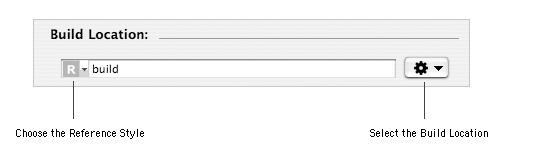
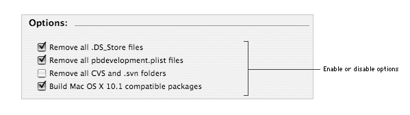
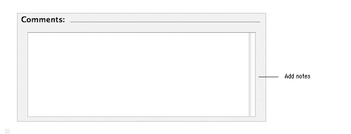

PATH Contents > Configuring the project
Configuring the project
When you create a new project from a template or by importing a PackageMaker project, the project options are the default ones. These options are
mainly dealing with the building of the project and its components. You can change these options if needed.
Customizing the build location
By default, the components are built in a build folder at the same level as the project. You can choose another build location if you wish.
Notes:
- The reference style for the build location is by default relative to the project. You can switch to an absolute path reference
style using the text field pop-up menu.
- This document shows how to change the build location using the standard open dialog. It is possible to directly type
the path name of the build location or to drag and drop a folder from the Finder to the text field (as long as the text field
is not in edition mode).
|
|

To customize the build location:
| 1 | Choose View > Project. |
| 2 | Choose Choose… from the Action pop-up menu
in the Build Location section. |
| 3 | Select or create the folder to use as the build
location and click Choose. |
Selecting Options
When you create a new project, options affecting the building of every metapackage or packages are enabled by default.
These options can be changed if needed.

To disable or enable options:
| 1 | Choose View > Project. |
| 2 | Select or unselect checkboxes in the Options section. |
Here is the list of the available options:
- Remove all .DS_Store files: remove all the invisible .DS_Store files from the final file archive of packages.
.DS_Store files are created by the Finder to store folders view options for instance.
By default, this option is enabled.
- Remove all pbdevelopment.plist files: remove all the pbdevelopment.plist ffiles rom the final file archive of packages.
pbdevelopment.plist files are created by Xcode or ProjectBuilder in the Contents folder of applications
or bundles when building them.
By default, this option is enabled.
- Remove all CVS and .svn folders: remove all the CVS or .svn folders from the final file archive of packages. CVS folders are created
by the CVS Source Control Management software. .svn folders are created by the Subversion software.
By default, this option is disabled.
- Build Mac OS X 10.1 compatible packages: build components that can be installed using the Installer
version available in Mac OS X 10.1 and earlier.
By default, this option is enabled.
|
Note: The version of Installer available with Mac OS X 10.1 and earlier does not support all the options available with
later versions of Mac OS X.
|
|
Adding notes or comments
You can add notes or comments for a project. For instance, you can list the versions of applications installed by the project.

To add or change comments:
| 1 | Choose View > Project. |
| 2 | Type your notes in the text field of the Comments section. |
Author: Stéphane Sudre